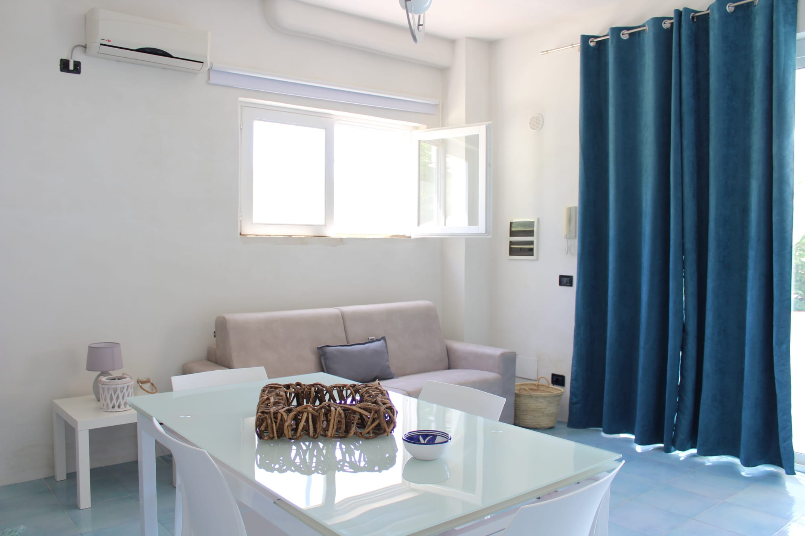
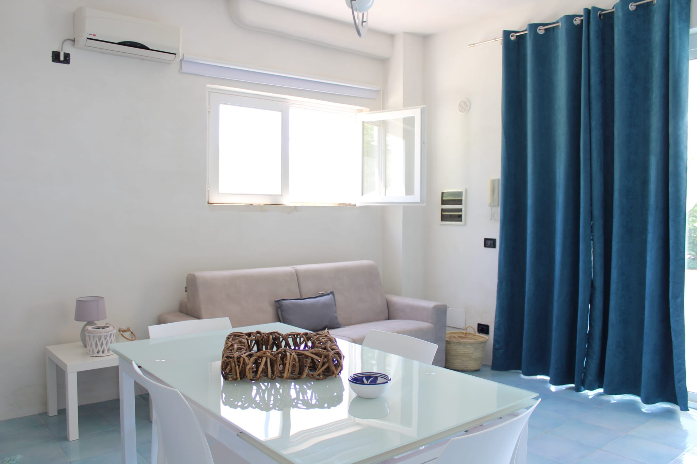

Appartamento all'interno della villa padronale che si affaccia sul Golfo di Castellamare, a 900 mt. dalla spiaggia di Balestrate. L'appartamento e' finemente arredato e corredato per ospitare fino a 4 persone. E' composto da una camera matrimoniale, un elegante bagno con ampia doccia,cucina soggiorno con divano letto matrimoniale che si affaccia su ampio giardino dove si puo pranzare con annesso barbeque, una bellissima piscina dove trascorrere momenti di assoluto relax e un'area fitness.
Appartamento in villa da 5 posti
Delizioso appartamento di nuova costruzione all’interno della villa patronale, situato sulla costa occidentale della Sicilia che si affaccia sul Golfo di Castellammare esattamente a 900 m della spiaggia attrezza di Balestrate immersa nella campagna siciliana con una spettacolare vista panoramica sul Golfo fino a Capo San Vito attraversando la Riserva Naturale dello Zingaro, e uno sguardo sulla campagna e i suoi spettacolari vigneti, coltura alla base dell’economia siciliana. L'appartamento è finemente arredato e soddisfa le esigenze di una casa vacanze moderna e funzionale. E’ composto da una camera da letto matrimoniale, un elegante bagno rifinito con ampia doccia, una cucina soggiorno con un divano letto che si affaccia su un ampio giardino mediterraneo, con possibilità di poter pranzare all’aria aperta con annesso barbecue e una bellissima piscina a servizio della villa per trascorrere momenti di assoluto relax.
I servizi offerti: Lavatrice, Aria condizionata, Wi Fi, Forno a microonde, stoviglie per cucinare, ferro da stiro e asciugacapelli, biancheria da bagno e da notte, zona barbecue, un posto auto privato.
E’ vietato fumare negli spazi interni, e non sono ammessi animali.
La posizione strategica consente di raggiungere agevolmente alcuni dei siti più interessanti della nostra meravigliosa terra sia dal punto di vista naturalistico che archeologico/monumentale storico e artistico.
Al centro tra due importanti province della Sicilia occidentale Palermo e Trapani, dista 40 Km da Palermo capoluogo siciliano. Il sito seriale Palermo arabo-normanna e le cattedrali di Cefalù e Monreale è stato dichiarato Patrimonio dell'umanità dall’Unesco e Capitale della Cultura per il 2018.
A pochissimi chilometri c’è la Riserva Naturale Orientata dello Zingaro. La costa dello Zingaro è uno dei pochissimi tratti di costa della Sicilia non contaminata dalla presenza di una strada litoranea, meglio raggiungibile via mare per dei bagni in acque cristalline nelle piccole baie naturali. Il paesaggio originario era costituito in massima parte da foresta mediterranea sempreverde. Nella riserva nidificano ben 39 specie di uccelli tra cui il falco pellegrino e l'aquila del Bonelli..
Le Terme Segestane sono delle sorgenti idrotermali note per le loro proprietà terapeutiche .Tali acque si prestano ad essere utilizzate per bagni e inalazioni, i fanghi sono utili curare reumatismi, artriti, artrosi e malattie della pelle.
Il parco archeologico di Selinunte (era una antica città greca sulla costa sud-occidentale della Sicilia) è composto da cinque templi costruiti intorno ad una acropoli. Dei cinque templi solo il tempio E (il cosiddetto tempio di Era) è stato ricostruito.
Le Saline della Laguna si trovano in Sicilia occidentale, sul litorale che collega Trapani con Marsala. Un territorio unico di fronte l’isola di Mothia, lungo la famosa “via del sale”. Un percorso tutto da scoprire, nel cuore della Riserva Naturale Orientata Isole dello Stagnone.
Visitare Erice, antico borgo medievale, significa perdersi tra mille scorci di stradine basolate, fortificazioni, antiche chiese (la Matrice e Sant’Orsola), conventi, botteghe artigiane (produzione di ceramica, dolci tipici, tappeti), pinete e giardini, per poi smarrirsi, sul bordo della cittadina, in panorami mozzafiato verso le isole Egadi, lo Stagnone, le Saline e i campi coltivati di tutta la provincia di Trapani.
Appartamento in villa da 4 posti
Situato a Balestrate, l'Isola del sole, Appartamenti con piscina offre una piscina, biciclette gratuite, un giardino, una vista sulle montagne e sistemazioni con connessione WiFi gratuita.
Dotata di terrazza, vista sul mare, area salotto, TV satellitare a schermo piatto e bagno privato con bidet e asciugacapelli, questa casa vacanze include una cucina completamente attrezzata con frigorifero e forno. Non mancano inoltre un microonde, un piano cottura, un tostapane, una macchina da caffè e un bollitore.
L'Isola del sole, Appartamenti con piscina dispone di un barbecue.
La struttura dista 2,8 km dalla spiaggia di Balestrate e da quella di Calatubo. L’Aeroporto di Falcone-Borsellino, lo scalo più vicino, dista 26 km ed è raggiungibile tramite un apposito servizio di navetta aeroportuale a pagamento.


 
